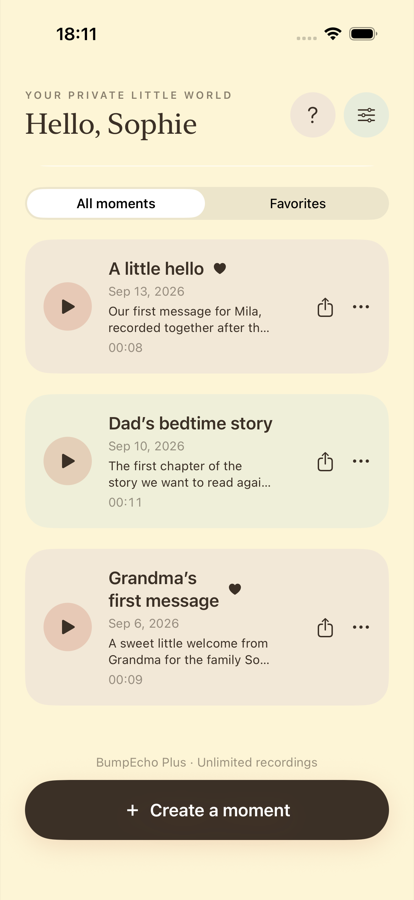

A little hello ♥
Our first message, recorded together after the scan.
 Bump Echo
Bump Echo
Your private pregnancy Soundbook
Record a message, a song, a loved one’s voice—or simply the way today sounded. Bump Echo keeps each memory together in one gentle place.

01 / SOME MEMORIES ARE HEARD
Pregnancy is full of voices, thoughts and ordinary little sounds that are easy to lose. Bump Echo gives them somewhere to live.
Each recording becomes a memory you can name, describe, favorite, replay and share when you choose.
Sample memories shown
Our first message, recorded together after the scan.
The first chapter of the story we want to read again.
A sweet little welcome from Grandma for the family Soundbook.
02 / HOW A MOMENT BECOMES A MEMORY
Record the moment
Use your iPhone microphone to capture a message, song, story, loved one’s voice or meaningful everyday sound.
Build your Soundbook
Add a title and note, mark the moments you love most, search your collection and replay them whenever you want.

Share by choice
Nothing is shared automatically. If one memory belongs with someone else, choose it and use the familiar iOS share sheet.
03 / A PRIVATE LITTLE WORLD
Bump Echo does not upload recordings, titles, notes, names or pregnancy details to a developer-operated server. Your personal Soundbook lives in the app’s local storage on your iPhone.
Read the current privacy policyYour recordings and personal details stay in the app’s storage on your device.
There is no Bump Echo login or developer-hosted recording library.
A recording leaves the app only when you choose to share it.
04 / AN AUDIO KEEPSAKE
Bump Echo captures ordinary microphone audio. It does not identify or isolate a fetal heartbeat, measure fetal heart rate, monitor fetal movement, diagnose a condition or assess pregnancy or fetal wellbeing. Never use it to make healthcare decisions or delay professional care.
05 / KEEP GROWING YOUR SOUNDBOOK
Unlock unlimited new recordings with one non-consumable in-app purchase. No recurring charge, renewal or scheduled expiry.
06 / QUESTIONS
No. Bump Echo records ordinary microphone audio for personal memories. It does not identify a fetal heartbeat, measure heart rate or assess pregnancy or fetal wellbeing.
Recordings, titles, notes and pregnancy details are stored in the app’s local storage on your iPhone. Apple device backups may include app data depending on your settings.
Yes. Nothing is shared automatically. You choose an individual recording and recipient through the iOS share sheet.
No. Bump Echo does not require a user account or keep a developer-hosted recording library.
Bump Echo Lifetime is the purchase offered to new customers. It is a one-time in-app purchase with no recurring charge or renewal. Existing subscriptions continue under their original terms.
A voice today can become a gift for later.